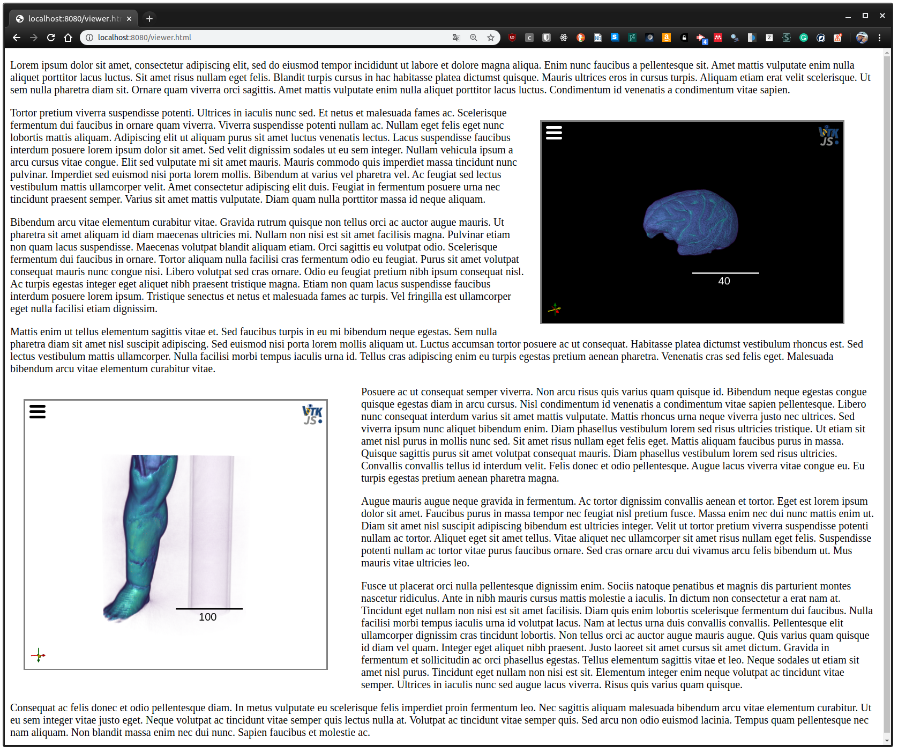

ITK/VTK Viewer can be used within an existing web site as a library to embed interactive 3D visualizations for remote or local datasets. To do so, create a container element for the viewer as follows.
<div class="itk-vtk-viewer" /> |
Moreover, the JavaScript library should also be added to the web page. Only one of the following is required
<script type="text/javascript" src="https://kitware.github.io/itk-vtk-viewer/app/itkVtkViewerCDN.js"></script> |
or
<script type="text/javascript" src="https://unpkg.io/itk-vtk-viewer/dist/itkVtkViewerCDN.js"></script> |
or, fixed to a specific version:
<script type="text/javascript" src="https://unpkg.io/itk-vtk-viewer@9.14.1/dist/itkVtkViewerCDN.js"></script> |
Viewer configuration
The container <div/> can be extended with the following set of data attributes:
- (Mandatory) data-url=”/data/005_36months_T2_RegT1_Reg2Atlas_ManualBrainMask_Stripped.nrrd”
- (Optional) data-viewport=”300x200” | default is 500x500
- (Optional) data-background-color=”00aa00” | default is black
- (Optional) __data-use2D=”false”

|